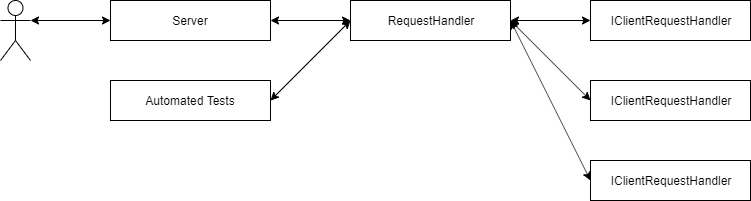

Standard Server
Nexus HTTP Server attempts to abstract handling HTTP requests from clients to returning requests for specific URLs, and handling requests with the context of the parameters and the body.
Creating the Server
The system is set up to have a RequestHandler object
be given to an HttpServer object. Other IClientRequestHandler
objects are registered to the RequestHandler. The reason there
is a seprate request hanlder is to allow for easier testing without
having to create a server instance. Optionally, multiple server
objects can be used to listen on different ports if needed.

using Nexus.Http.Server.Http.Request; using Nexus.Http.Server.Http.Server; namespace Demo { public class Program { public static void Main(string[] args) { // Create the request handlers. var handler = new RequestHandler(); // Create and start the server. var server = new HttpServer(8080,handler); server.Start(); } } }
If you run the code above and open up a browser and
go to http://localhost:8080, you will see the message
"Invalid request".
Adding Client Request Handlers
While the code above works, it isn't useful since it
doesn't handle any requests. To make it useful, it has to
be set up to handle requests. To add a handler, you need to
provide tthe following:
- The HTTP method (GET, POST, PATCH, etc)
- The relative URL
- The handler that implements IClientRequestHandler
using Nexus.Http.Server.Http.Request; using Nexus.Http.Server.Http.Response; using Nexus.Http.Server.Http.Server; namespace Demo { public class Program { public class Handler : IClientRequestHandler { /* * Returns a response for a given request. */ public HttpResponse GetResponseData(HttpRequest request) { return new HttpResponse(200,"text/html","Hello world!"); } } public static void Main(string[] args) { // Create the request handlers. var handler = new RequestHandler(); handler.RegisterHandler("GET","/",new Handler()); handler.RegisterHandler("GET","/test",new Handler()); // Create and start the server. var server = new HttpServer(8080,handler); server.Start(); } } }
The code above adds registers for http://localhost:8080 and
http://localhost:8080/test and returns a "Hello world!" message.
Since text responses are common, HttpResponse.CreateSuccessResponse
can be used for the example above.
using Nexus.Http.Server.Http.Request; using Nexus.Http.Server.Http.Response; using Nexus.Http.Server.Http.Server; namespace Demo { public class Program { public class Handler : IClientRequestHandler { /* * Returns a response for a given request. */ public HttpResponse GetResponseData(HttpRequest request) { return HttpResponse.CreateSuccessResponse("Hello world!"); } } public static void Main(string[] args) { // Create the request handlers. var handler = new RequestHandler(); handler.RegisterHandler("GET","/",new Handler()); handler.RegisterHandler("GET","/test",new Handler()); // Create and start the server. var server = new HttpServer(8080,handler); server.Start(); } } }
URL Parameters
URL parameters can also be parsed from the request. The HttpRequest
class passed into the GetResponseData method contains a URL object
and the body of the request ("" if not present, like in GET requests).
using Nexus.Http.Server.Http.Request; using Nexus.Http.Server.Http.Response; using Nexus.Http.Server.Http.Server; namespace Demo { public class Program { public class Handler : IClientRequestHandler { /* * Returns a response for a given request. */ public HttpResponse GetResponseData(HttpRequest request) { return HttpResponse.CreateSuccessResponse("Hello world!"); } } public static void Main(string[] args) { // Create the request handlers. var handler = new RequestHandler(); handler.RegisterHandler("GET","/",new Handler()); handler.RegisterHandler("GET","/test",new Handler()); // Create and start the server. var server = new HttpServer(8080,handler); server.Start(); } } }
Using the http://localhost:8080 and http://localhost:8080/test
URLs in a browser will show the same results, but using
http://localhost:8080?param=Test%20param and http://localhost:8080/test?param=Test%20param
will show Test param on the second line. If a parameter isn't
defined, null is returned.